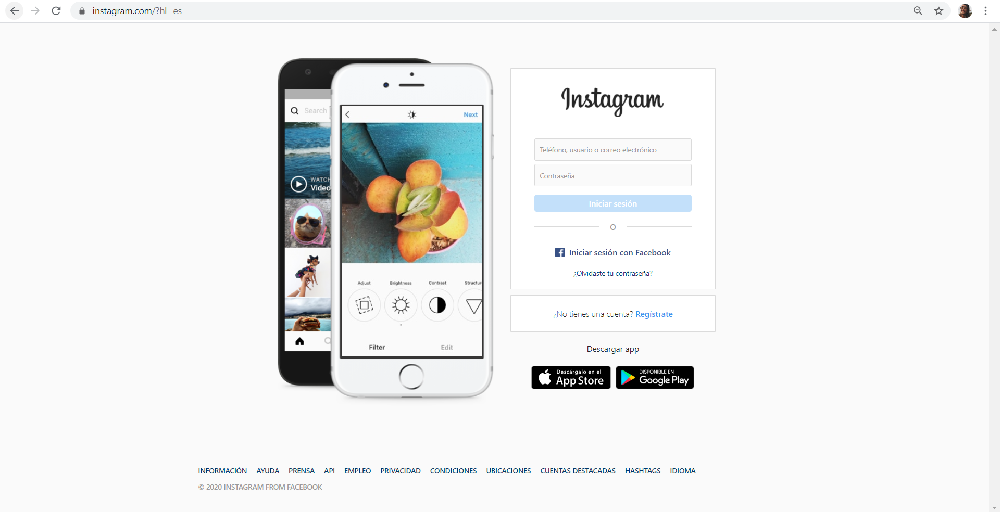

Captura de pantalla de Instragram. Esta es una red social donde puedes publicar fotos y videos.
Captura de pantalla de Facebook. Es una red social donde puedes publicar fotos y videos.
Captura de panatalla de wikipedia. Esta funciona como una enciclopedia de contenido libre que todos pueden editar.

Captura de pantalla de VSCO. Esta es una aplicación móvil de fotografía donde puedes hacer fotos , editarlas y publicarlas.